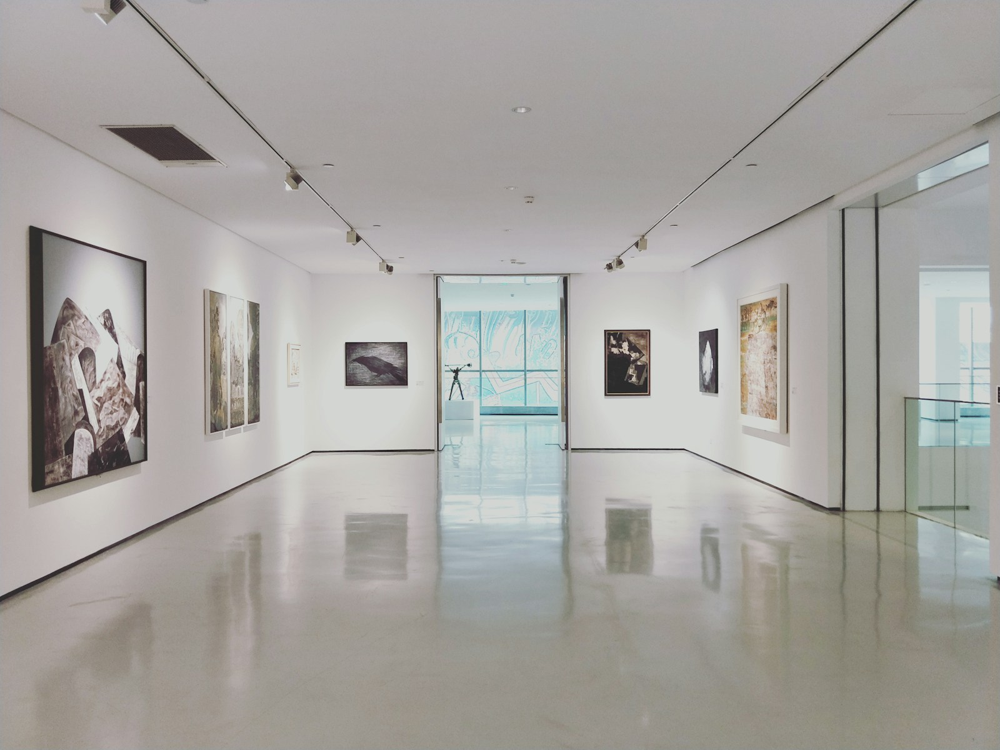
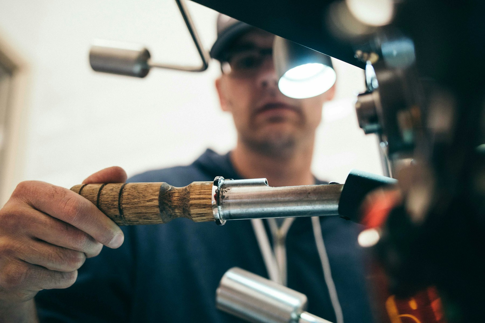
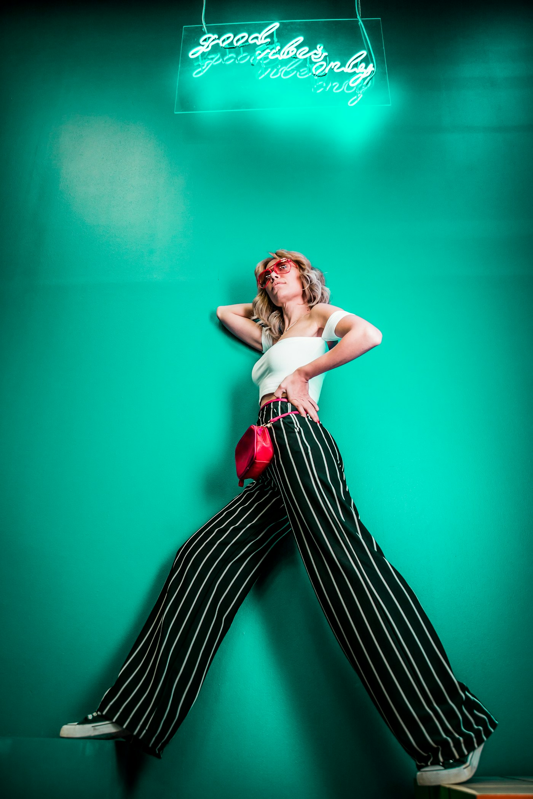

Fashion as Theatre
Runway History

Paris • January 2024
Only the 6th designer in history invited as guest couturier for Jean Paul Gaultier. The show captivated Paris, covered by BBC, Vogue and every major fashion publication globally.
London • February 2025
The Grade I-listed Goldsmiths' Hall in the City of London — chandeliers, marble columns and stone busts — hosted the AW25 collection. Attended by Alexa Chung, Fiona Shaw, Andrea Riseborough and Bel Powley.
London • Annual
One of Simone Rocha's most iconic London Fashion Week venues — the grandeur of Central Hall Westminster providing the perfect dramatic backdrop.
London • SS Collection
The Central Criminal Court of England and Wales — charged with history and drama. Simone transformed the space into a runway that felt both sacred and subversive.
London • AW Collection
The grace and discipline of ballet as setting for a collection rooted in femininity and movement — blurring the line between fashion show and dance.

London • 2010
The debut that launched everything. Simone's MA graduate collection shown during London Fashion Week 2010 — immediate critical acclaim led to her first standalone runway show.
The Philosophy
For Simone Rocha, the venue is never incidental — it is integral. From courtrooms to ballet studios, each space becomes a character in the collection's narrative.
Explore the Collections